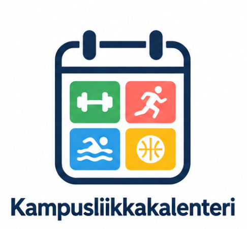

Mikä on Kampusliikkakalenteri?
Palvelun tarkoituksena olisi tarjota opiskelijoille mahdollisuus osallistua helposti erilaisiin liikuntatapahtumiin ja näin edistää yleistä fyysistä ja henkistä hyvinvointia.
Ideana olisi verkkosivustopohjainen kalenteri, johon opiskelijat voisivat itse lisätä tapahtumia ja ilmoittautua niihin.
Miksi palvelua tarvitaan?
Tänä päivänä opiskelijoiden välinen verkostoituminen tapahtuu pääsääntöisesti opiskelijatapahtumien kautta, joissa harvemmin järjestetään liikunta-aktiviteetteja.
Kampusliikkakalenteri auttaisi myös sellaisia opiskelijoita verkostoitumaan, joita kiinnostaa enemmän liikunta ja vähemmän juhliminen.
Mitä palvelussa voisi tehdä?
- Löytää opiskelijoille suunnattuja liikuntatapahtumia
- Lisätä omia liikuntatapahtumia kalenteriin
- Ilmoittautua muiden järjestämiin tapahtumiin
- Tutustua uusiin ihmisiin liikunnan kautta
Liikunta yhdistää opiskelijoita
"Nothing has to be perfect, including exercise" - Michelle Segar University of Michigan